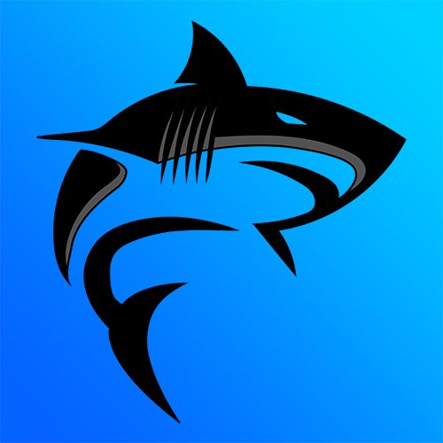

Afin de relancer la vie étudiante suite au COVID-19, avec 4 amis, nous avons pris la relève de l'association étudiante de notre formation dans l'IUT A. Avec le BDE Informatique nous avons pu réaliser plusieurs événements comme des soirées, des ventes de sandwichs/petits-déjeuners et aussi participer de notre côté au ZEvent (événement organisé par Zerator et son équipe chaque année depuis 2016, pour soutenir une ou plusieurs associations).
